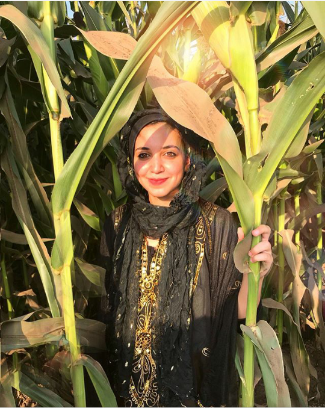

Mai El Naga is a self-taught fine artist born and raised in Cairo. As a child, Mai always found passion in sketching and at 12 years, she picked up a brush and began painting. Though she is currently studying Medicine, Mai continues to proceed in her art journey. Her art focuses on incorporating figures with a variety of elements through the use of mixed media. She uses a vibrant color palette and a myriad of textures. The people in her paintings are faces she has captured throughout her travels. Mai is a also a muralist, illustrator and a scarf designer.